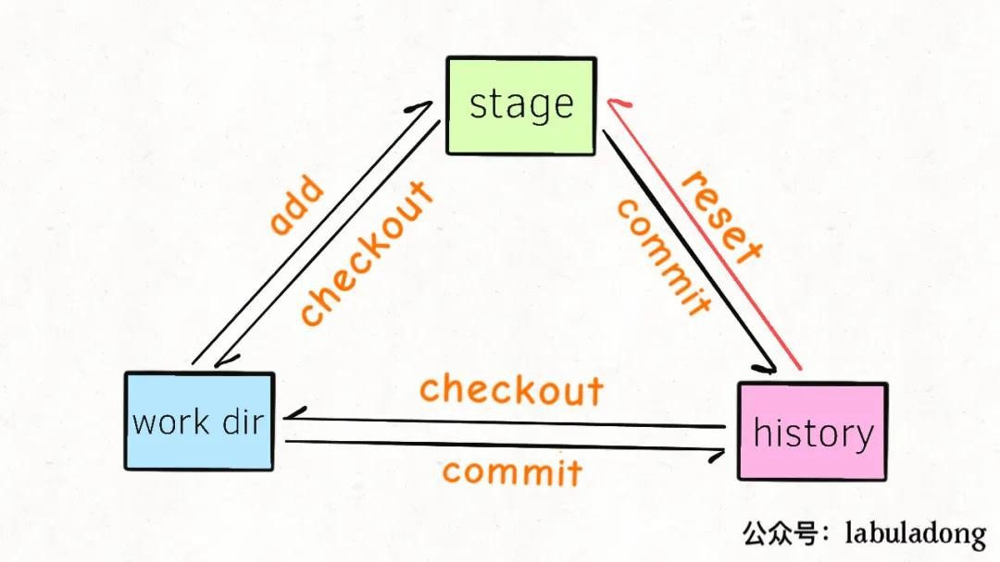

git命令

1 概念
- 工作区：work区
- 暂存区：staged区
- 仓库区：history区
2 基础
git init 创建本地仓库
git add 添加某文件到暂存区
git add -A 它能stages所有文件，包括删除文件的操作
git add . 只能stages新文件和被修改文件，没有被删除文件
git commit 将暂存区所有文件提交到当前分支（快照）
git status 查看工作区状态
git diff 查看工作区某文件的变化
git log 查看提交到分支的版本/commit id（commit的记录）
git log --graph --pretty=oneline --abbrev-commit 可以查看到合并的图（merge）
git reflog 查看git所有分支操作（历史记录操作，每一个操作对应着一个ID）
3 版本回退
3.1 reset
git reset 版本回退（unlink...?需要将编辑器关闭）
git reset --hard HEAD^ 其中HEAD为当前版本，一个^为上一版本，两个^为上上一个版本，往上100个版本写100个^比较容易数不过来，所以写成HEAD~100
除了用HEAD这种方式，还可以用commitID（可以通过git log查看）
git reset --mixed： 此为默认方式，不带任何参数的git reset，即时这种方式，它回退到某个版本，只保留源码，回退commit和add信息
git reset --soft： 回退到某个版本，只回退了commit的信息。如果还要提交，直接commit即可
git reset --hard： 彻底回退到某个版本，本地的源码也会变为上一个版本的内容，慎用！
git reset --hard cb926...（一个SHA1计算出来的一个非常大的数字，用十六进制表示），可以回退到这个“提交版本”
git reset HEAD 文件名 可以把暂存区的修改撤销掉（unstage），重新放回工作区
git reset命令既可以回退版本，也可以把暂存区的修改回退到工作区。当我们用HEAD时，表示当前分支最新的版本
head指向分支名或提交记录（提交的hash值），即head->
[branch]->[hash提交记录]可以使用git checkout[hash提交记录]更改head的指向
原来指向的提交记录就跟从来没有提交过一样。
在reset后， C2 所做的变更还在，但是处于未加入暂存区状态(unstage)。可以想像成同时移动了head指针和分支名main的指针到C1，但不同的是，reset会把C2更改过的放进unstage，而如果移动指针的话，工作区不会有什么改变。
3.2 revert
为了撤销更改并分享给别人，需要使用 git revert: 可以撤销指定的提交内容，撤销后会生成一个新的commit。
新提交记录 C2' 引入了更改 —— 这些更改刚好是用来撤销 C2 这个提交的。也就是说 C2' 的状态与 C1 是相同的。
revert 之后就可以把你的更改推送到远程仓库与别人分享啦。
3.2.1 两种commit
常规的 commit：git commit 提交的 commitgit show 3e853bd commit 3e853bdcb2d8ce45be87d4f902c0ff6ad00f240amerge commit：git merge 合并两个分支之后，得到一个新的 merge commit- merge commit 包含两个
parent commit，代表该 merge commit 是从哪两个 commit 合并过来的。
git show bd86846 commit bd868465569400a6b9408050643e5949e8f2b8f5 Merge: ba25a9d 1c7036f- merge commit 包含两个
3.2.2 revert两种commit
revert 常规commit：使用git revert [commit id]即可，git 会生成一个新的 commit，将指定的 commit 内容从当前分支上撤除。
revert merge commit：
git 只能撤销合并分支中的其中一条分支，如果直接使用 git revert [merge commit id]，git将不知道到底要撤除哪一条分支上的内容修改，
这时需要添加 -m 选项：表示这次 revert 的是一个 merge commit。
并且需要指定一个 parent number的分支，标识出主线，
- 主线的内容修改将会保留，
- 而另一条分支的内容修改将被 revert。
即完整的命令应该是：git revert -m [parent number] [merge commit id]
parent number：是一个数字，数字取值为1和2，对应git show从左到右排列出来的分支。
以上一小节的merge commit为例，此时想要撤销该merge commit：
分析：parent commit 分别为 ba25a9d 和 1c7036f，要保留ba25a9d分支的修改，而抛弃1c7036f这个分支的修改，应这样写：
git revert -m 1 bd86846
3.3 checkout
有切换分支和撤销修改两种意思，当后面跟的是分支名，就表示切换，后面跟的是路径就是撤销，如果撤销文件名和分支名相同，需要在其前面加上“-- ”注意有一个空格。所以一般为了好分辨，如果是路径就加上“-- ”，如果是切换分支就不加。
这里讲撤销：
git checkout -- readme.txt意思就是，把readme.txt文件在工作区的修改全部撤销，这里有两种情况：
一种是readme.txt自修改后还没有被放到暂存区，现在，撤销修改就回到和版本库一模一样的状态；
一种是readme.txt已经添加到暂存区后，又作了修改，现在，撤销修改就回到添加到暂存区后的状态。
总之，就是让这个文件回到工作区没有修改的状态（用版本库里的版本替换工作区的版本，无论工作区是修改还是删除，都可以“一键还原”）
Git 的一些命令中，借鉴了这种用法。使用 -- 去隔离开“树”与“路径”。
例如，你想还原 一个文件 path/to/file.txt，在Git中使用如下命令
git checkout path/to/file.txt
但是天杀的居然有一个文件名字就叫做 "master"
如果你套用上面的命令，想还原“master”文件
git checkout master
最终起的效果是变成切换到了master分支上。
正确的做法是使用 --，这样它后面的字符串不会当做“树”，而认为是文件路径。
如git checkout -- master
git checkout 还有一种作用，如果工作区中的文件被误删，但如果本地仓库中还有，可以将仓库中的文件恢复到工作区，即可以从本地仓库中有而工作区没有的copy到工作区中。
3.4 测试reset和checkout
首先，对于两者来说，
- 是否指定历史版本，
- 指定了历史版本，如命令加上了
head，则基于head指向的历史版本对工作区进行处理 - 不指定历史版本，如命令没加
head，则默认基于head指向的历史版本对工作区进行处理
- 指定了历史版本，如命令加上了
对于reset：
- 是否指定文件，无需
--符号，- 指定则只对指定的文件进行处理
- 否则对所有的文件进行处理
对于checkout：
- 是否指定文件，
- 有
--符号，则只对指定的文件进行处理 - 无
--符号，则切换分支或移动head指针
- 有
创建如下环境，
- 创建a,b两文件，分别写入1，提交历史版本"1st"
- 更改a,b两文件，改为2，提交历史版本"2nd"
此时head指向"2nd".
修改a为3，add进staged区，再次修改a为4,
回退到1st:
- 输入
git reset head^ --soft此时查看a为4，b为2，各区状态如下： 其实staged区里的a为2，b为2，而工作区的a为4，b为2， 也就是说"2nd"历史版本里a,b的修改放到了staged区
reset和checkout的区别
reset: 回退，根据head指针指向的版本
git reset --soft:中间夹着的历史版本中的修改全都变成可commit的状态git reset --mixed:默认，即不加--mixed的情况下，中间夹着的历史版本中的修改全都变成可add的状态git reset --hard:work区、staged区、history区全回到指定版本刚被commit后的状态
如现在有1、2(*head)两个历史版本，此时工作区修改为12，然后add了，又在工作区修改13，
即工作区也有修改(13)，staged区也有修改(12)，
当只使用git reset时，默认是回退到head指向的历史版本(2)，由于现在当前版本没有历史版本，所有就不回退，只把staged区的修改回退到可add，但由于此时工作区的内容在之前add后又修改成了13，这时回退的12，无法覆盖工作区，因此在reset后工作区仍为13.
当只使用git reset head^时，回退到head指向的历史版本(1),其中夹了一个历史版本(2)，那么(2)的历史版本记录的修改会变为可add放进工作区，一样的，若是工作区的更新时间比回退版本的新，那么回退的无法覆盖工作区。
checkout: 恢复，优先级(staged->history)
- 首先判断staged区是否有修改，有则将work区的修改恢复成staged区一样，结束，没有跳第2步；
- 根据head指针指向的history区版本，将work区的修改恢复成history区一样，结束。
如a为1，add后，这时修改a为2，使用git checkout -- a可以让a恢复成staged区里的值，即1.
如果staged区没有修改，就会将head指向的历史版本的a覆盖此时工作区中的a的值。
3.5 restore
git restore --stage 和git restore 两个命令，总结如下，
1、文件在暂存区且工作区未作修改的情况
使用git restore --staged 把文件从暂存区移动到工作区，即文件不被追踪；
2、文件在暂存区且工作区又修改过的情况
- 使用
git restore --staged把文件从暂存区移动到工作区，且不会撤销修改的内容；同
git reset - 使用
git restore文件仍在暂存区且会撤销文件修改的内容；同
git checkout
3、文件在本地代码库且工作区又修改过的情况
- 使用
git add把文件重新放到暂存区，且保留文件的修改； - 使用
git restore文件仍在本地代码库且会撤销文件的修改；同
git checkout
4 rm
git rm 删除本地连同版本库里的某文件，且需要commit一次
git rm –cached a/2.txt //unstaged,将暂存区的文件放回工作区
git rm -r --cached a/2.txt 删除a目录下的2.txt文件(删除远程不删除本地)
git rm -r --cached a 删除a目录，目录名有空格命令行需要用"\"进行转义，（如git rm -r --cached Photo\ albums）
5 分支
git branch name 创建分支name，创建了分支后如果在工作区修改后且并未add、commit，如果这时想切换到其他分支，请务必stash，否则在当前的修改会覆盖你想切换的分支中的相关文件。
如果在dev分支工作区做了修改，且没有add或stash，这时你checkout到foo分支，就会把在dev分支做出的修改移动到foo分支，dev分支工作区就没有修改，而foo分支做出了修改 ``` git branch 查看本地所有分支
git branch -d dev 删除dev分支，如果未合并，不允许删除
git branch -D 强行删除，即使未合并 ```
git merge dev 把dev分支合并到当前分支 fast-forward，查看log无法查到合并记录
git merge --no-ff 禁用fast-forward(快进模式)表示普通合并，合并后的历史有分支，能看出来曾经做过合并，而fast forward合并就看不出来曾经做过合并。其实合并相当于提交当前分支，可以加上-m参数
git merge --no-ff -m "merge with no-ff" dev
5.1 查看分支创建时间
git reflog show --date=iso <branch name>
可以查看到指定分支的历次更改记录，最下面一条的时间即是分支创建时间。
5.2 stash
git stash 将当前分支的工作现场储藏起来
类似栈，先进后出
git stash list 查看当前分支所储藏的工作现场列表
git stash apply 将当前分支储藏的工作现场列表最新的放回工作区，stash列表的其记录并不删除
git stash pop 同上一样，只不过列表中的其记录会被删除
git stash apply stash@{0} 放回指定的stash记录，需要手动删除stash列表记录
git stash drop stash@{0} 删除stash列表中的指定记录，用法和上述相同，如果不跟名称，删除所有
git checkout -b branch-name origin/branch-name
本地没有某分支，在本地创建和远程分支对应的分支，使用这个，本地和远程分支的名称最好一致
5.3 checkout切换分支
git checkout 当它是切换分支意义的时候，实质上是移动的HEAD指针。
当选择切换分支时，git checkout dev，此时head指向dev指向的提交记录
git branch -f main HEAD~3 将main分支指向head的父结点的父结点的父结点
git checkout -b dev 创建dev分支，并切换到dev分支
6 远程
ssh-keygen -t rsa -C "邮箱" 生成密钥，如果远程仓库没有保存你生成的密钥，你将只能pull，而不能push
在这之前要确保git config --global –list，若没有配置用户名和电子邮件地址
git config --global user.name "这里换上你的用户名"
git config --global user.email "这里换上你的邮箱"
每次commit时都会引用这两条信息，以说明是谁提交了代码。
6.1 连接远程库
git remote add origin git@gitee.com:ber3ud4/learngit.git（首先本地仓库已经建立好了）
git remote -v 查看已连接的远程库，如果没有推送权限，就看不到push的地址。
git remote set-url origin git@gitee.com:ber3ud4/learngit.git 更改remote链接
git branch -M main //修改当前分支名为main（因为说以前的master有黑人奴隶歧视啥的）
git push -u origin master
origin代表远程仓库，将本地的当前分支推送到远程库的master分支，-u表示同时把本地的master分支和远程同名的master分支关联起来，在以后的推送或者拉取时就可以简化命令，第一次push必须要加-u，否则会报错，推送时，要指定本地分支，这样，Git就会把该分支推送到远程库对应的远程分支上（在之前，首先要add,commit到本地仓库中）
或者git push --set-upstream origin branch1 关联远程branch1分支和当前本地分支
6.2 关联本地分支与远程分支
- 如果远程新建了一个分支，本地没有该分支。
可以利用 git checkout --track origin/branch_name ，这时本地会新建一个分支名叫 branch_name ，会自动跟踪远程的同名分支 branch_name。
git checkout --track origin/branch_name - 如果本地新建了一个分支 branch_name，但是在远程没有。
这时候 push 和 pull 指令就无法确定该跟踪谁，一般来说我们都会使其跟踪远程同名分支，所以可以利用 git push --set-upstream origin branch_name ，这样就可以自动在远程创建一个 branch_name 分支，然后本地分支会 track 该分支。后面再对该分支使用 push 和 pull 就自动同步。
git push --set-upstream origin branch_name
7 冲突
https://www.cnblogs.com/gavincoder/p/9071959.html
只有分支合并会产生冲突
多人协作的工作模式通常是这样：
首先，可以试图用git push origin branch-name推送自己的修改；
如果推送失败，则因为远程仓库的分支和你的本地分支相偏离了，需要先用git pull试图合并；
如果合并有冲突（merging提示），则找到冲突的地方（git会在文件中将互相冲突的内容标明），视情况更改，更改完成后在本地提交，至此冲突解决完毕（将不会再有merging提示）；
没有冲突或者解决掉冲突后，再用git push origin branch-name推送就能成功！
如果git pull提示“no tracking information”，则说明本地分支和远程分支的链接关系没有创建，用命令
git branch --set-upstream branch-name origin/branch-name。
这就是多人协作的工作模式，一旦熟悉了，就非常简单。
8 标签
git tag \
git tag v0.9 6224937
git show \
git tag -d v0.1 删除v0.1这个标签
git push origin \
git push origin --tags 一次性推送全部尚未推送到远程的本地标签
git tag -d v0.9
git push origin :refs/tags/v0.9
标签已经推送到远程，先从本地删除，然后，从远程删除。删除命令也是push
同一台电脑设置多个公钥与不同GITHUB帐号交互，在config文件中只需要更改host即可，git remote add git@host:账户名/仓库名.git，其中的host用config中的host
9 删除仓库
删除本地仓库
方法：
1.手动删除掉“Git本地仓库”里面的根目录下面的隐藏文件夹“.git”
2.命令：find . -name ".git" | xargs rm -Rf
验证：在Gitbash中进入仓库的目录中，如果目录末尾没有"(master)"，说明成功删除了本地仓库。
删除远程仓库
在github网站上找到tab上的settings,然后找到删除仓库链接即可。
10 总结
说白了，git的提交记录就是一颗颗结点组成的树，
每一颗结点就是一次提交记录，
HEAD就是可以在树上结点移动的指针，
分支名也是可以在树上结点移动的指针，只是默认指向该条分支下最新的提交记录。
git仓库分为3个区，
- 工作区（看得到的文件系统）
- 暂存区stage
- 历史区history（里面存的链表或者说是树【因为有多个分支】）：每1个结点便为commit的版本。
其实可以类比【事务】。
只有当一次事务commit后，才真正地保存了修改，每一次事务当然有事务id，git中对应commit的唯一hash，而history区中head指针则指向某一次提交的版本，默认指向最新修改的版本。
git status查看work dir和stage区域的状态， git log查看history区域的提交历史。

- git checkout 会覆盖
- git reset的应用场景（将文件的状态从stage退化到工作区，和checkout不同）： 对某文件进行了修改，然后git add将修改信息同步进了stage【工作区和stage区的内容相同，history不同】 此时使用git reset,会将history区里head指向的对应文件对stage区里的该文件进行覆盖【工作区为做出修改后的内容，history同化stage区的内容】,并将该文件设为unstage状态【此时可以接着之前的修改继续对该文件进行修改，然后git add】